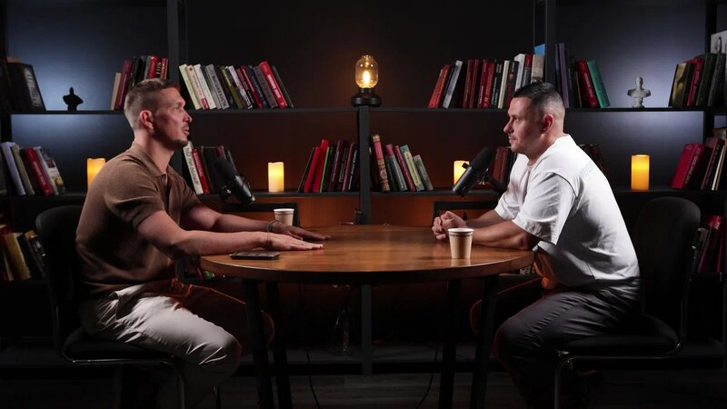

ВИДЕОПОРТФОЛИО
Ильнур.
Режиссёр монтажа
YouTube · Подкасты · Shorts / Reels · Интеграции
Смотреть работы
ИЗБРАННОЕ / ПОДКАСТ01 — 11
ПОДКАСТ
Смотреть на Яндекс Диске Бусов × Лазарев
ПОРТФОЛИО
Избранные работы11
YouTube, подкасты
и короткие видео.
Короткий формат03
ВЕРТИКАЛЬНЫЕ ВИДЕО / 9:16НА СВЯЗИ
Обсудим ваш проект?
Напишите, что нужно смонтировать.
Обсудим задачу, сроки и детали.